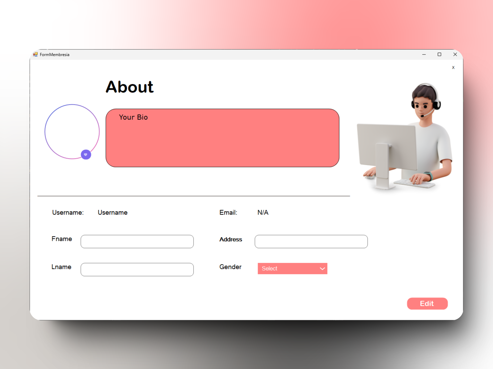
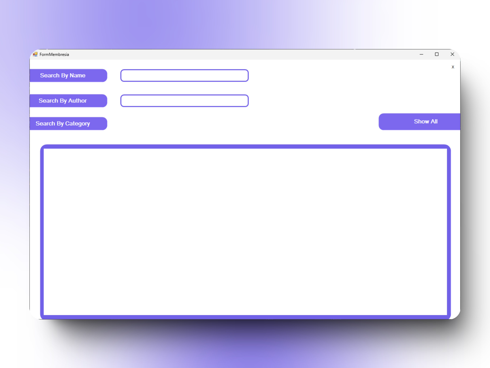
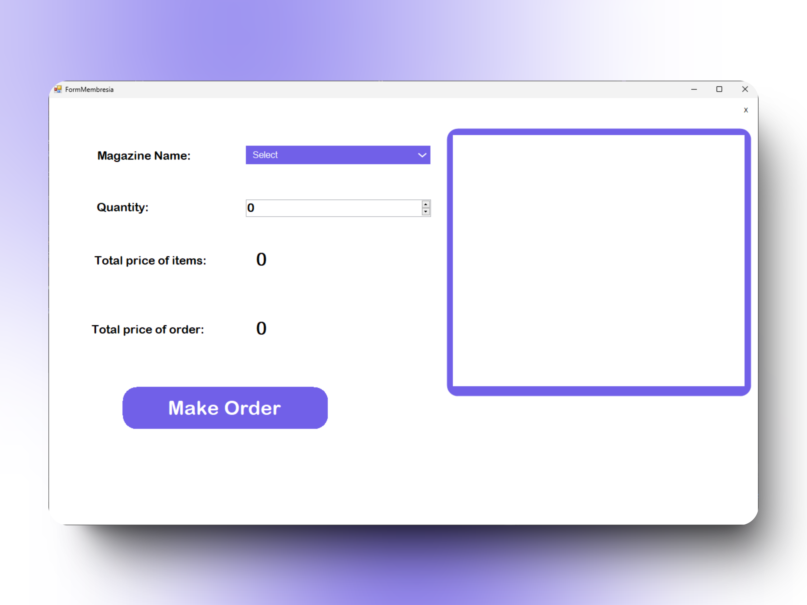
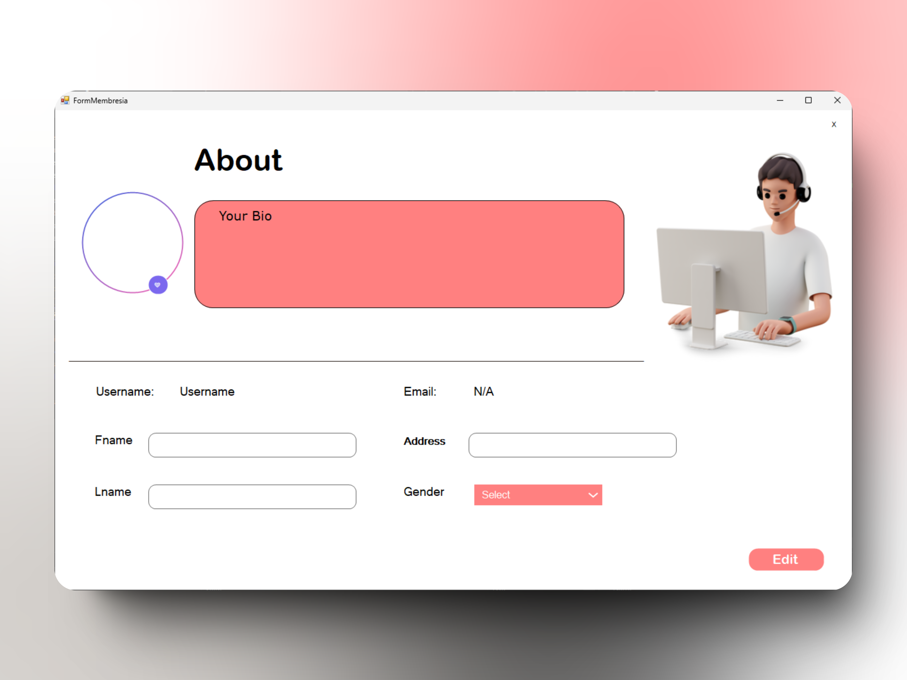
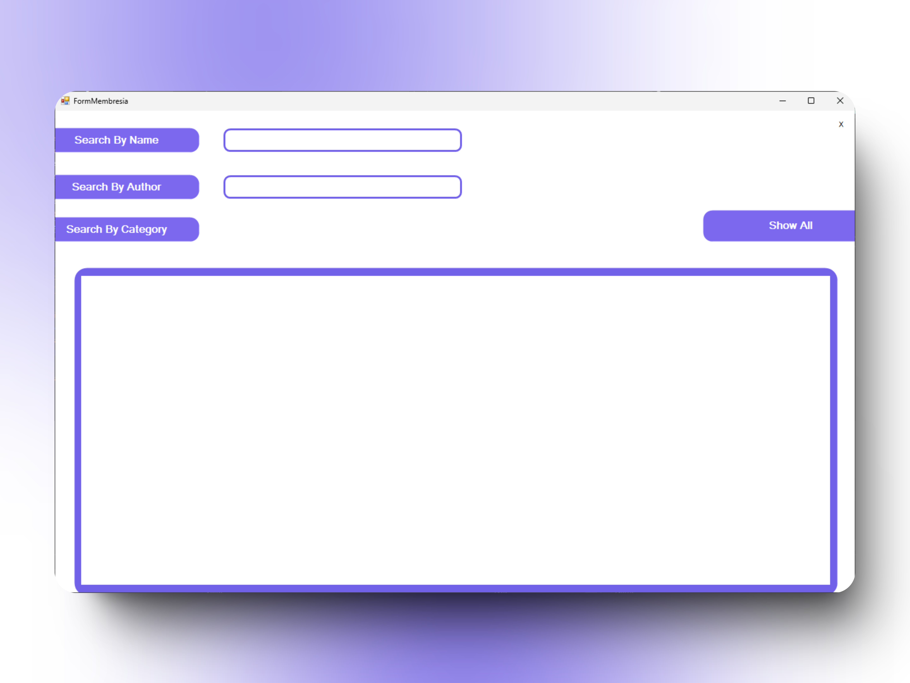
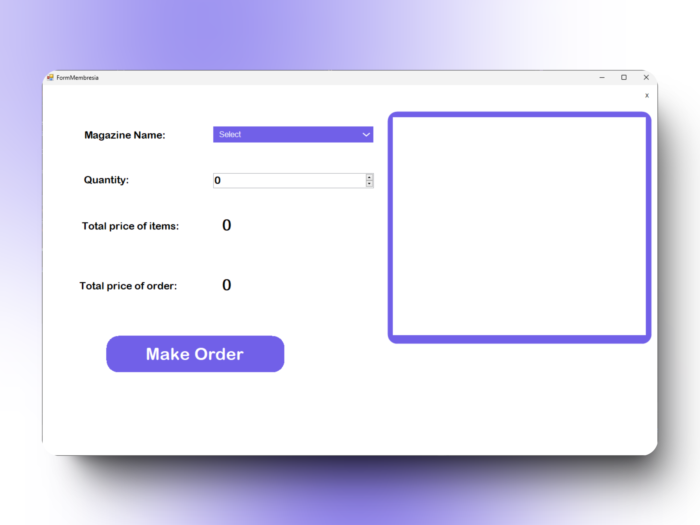

The Magazine
The Magazine System app allows you to purchase magazines, select quantities, and search for magazines by name, author, or category.
The Magazine app is a project developed as part of the Software Engineering course at the Faculty of Computer Science, Ain Shams University. This project involves creating an application that enables users to purchase magazines, select quantities, and search for magazines by name, author, or category.
The Magazine app features a variety of pages to enhance user experience and management. It includes login and registration pages, along with OTP-based recovery. Additional pages include the Team Page, About Page, Admin Page, Dashboard, and Edit Profile Page, among others.
The Magazine System app is developed using a combination of tools and technologies. The application is built with C# using Windows Forms for the user interface. It utilizes an Oracle database for data storage and management. For reporting, Crystal Reports and SAP are integrated to generate and manage reports. Email verification and form-building functionalities are handled using MiMI.


 




